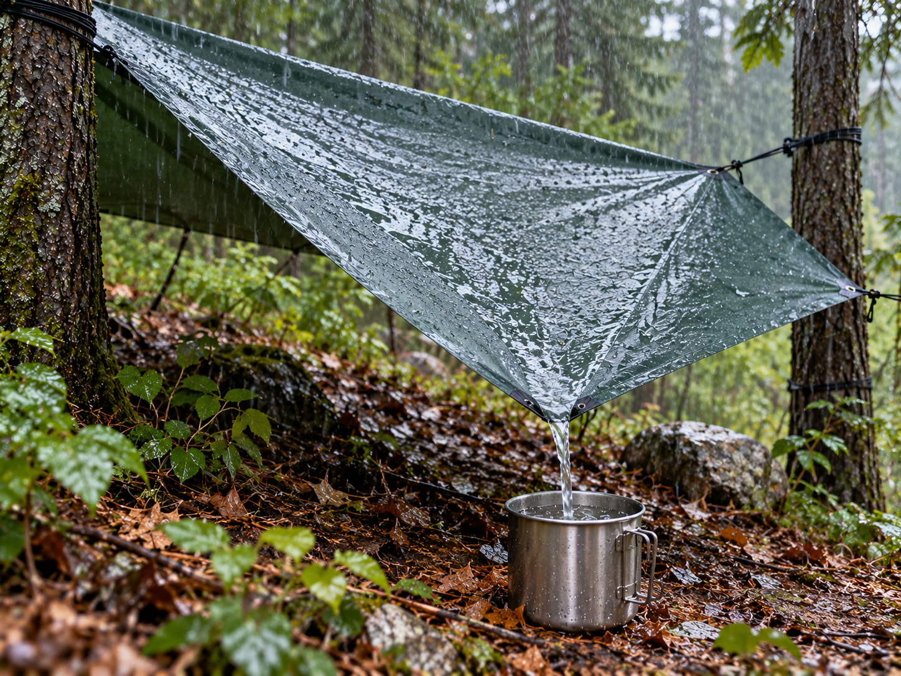

Boiling
Learn how boiling can help make water safer to drink.
Learn More →Choose a water skill to learn about its purpose, materials, and safety.
Learn how boiling can help make water safer to drink.
Learn More →
Learn how portable filters can be used to prepare water.
Learn More →
Learn how rainwater can be collected using a clean surface.
Learn More →
Learn how a solar still collects small amounts of water.
Learn More →